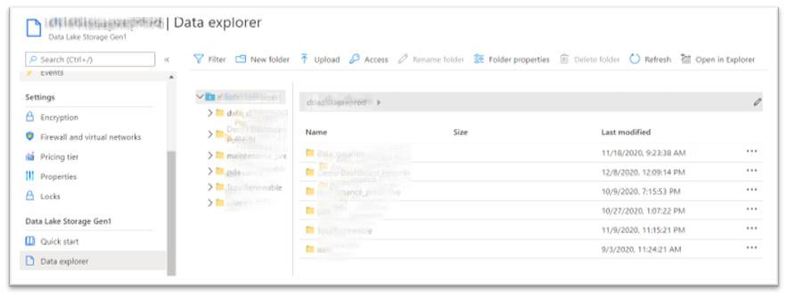

IV. Configure PowerBI to access to ADLS
Step 1. Connect PowerBI to ADLS
1. Click "Get data"

2. Type "azure" and select "Azure Data Lake Storage Gen1"

Then Connect
3. Copy the URL (III. 4)

Then click OK
4. View Data Lake Storage content

You can see the Data Lake Storage content as like you are in the Azure Portal Data Explorer
